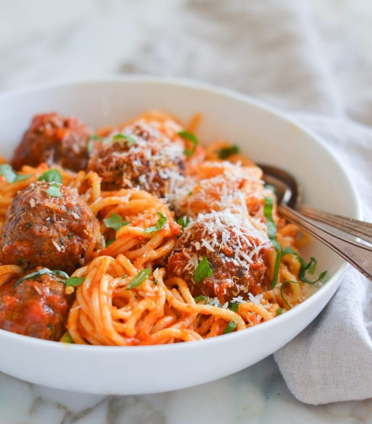

Spaghetti and Meatballs

Description
Tender bison meatballs with tomato and mushroom sauce over whole grain spaghetti. The sauce is chunkier than regular tomato sauce and is great even without the meatballs. I love serving this with Pillsbury® garlic bread sticks.
Ingredients
-
5 green onions, chopped
-
¼ cup finely chopped fresh parsley
-
1½ pounds 7% ground bison meat
-
1 slice bread, torn into pieces
-
1 teaspoon Worcestershire sauce
Steps
-
Combine green onions, parsley, oregano, and basil in a bowl; mix well.
-
Place bison in a bowl. Add 1/2 cup of the green onion mixture. Add egg, bread, 1 teaspoon salt, and Worcestershire sauce. Mix until evenly combined.
-
Shape mixture into eight 1 1/2-inch-wide meatballs. Place in a skillet over medium-high heat. Add red wine; cover and cook for 8 minutes. Flip and continue cooking, covered, for 8 minutes longer. An instant-read thermometer inserted into the center should read at least 160 degrees F (70 degrees C). Set aside and keep warm.
-
Melt butter in a large saucepan over medium-high heat. Add remaining green onion mixture, onion, mushrooms, and 1 teaspoon salt. Saute until onions are translucent, about 10 minutes. Add spaghetti sauce and stewed tomatoes. Bring to a boil.
-
Meanwhile, bring a large pot of lightly salted water to a boil. Cook spaghetti in the boiling water, stirring occasionally, until tender yet firm to the bite, 7 to 9 minutes. Drain.
-
Season sauce with salt and pepper and serve over spaghetti. Top with meatballs and garnish with Parmesan cheese.